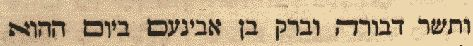
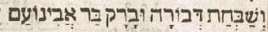
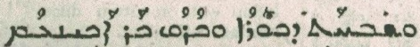
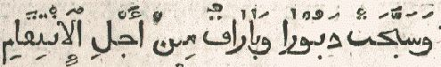

The Song of Deborah: Poetry in Dialect
A philological reconstruction and fresh translation of Judges 5, one of the oldest poems in the Hebrew Bible, read through its Northwest-Semitic dialect.
Biblical & Semitic Philology
Professor Emeritus of Old Testament Studies and Hebrew
Palmer Theological Seminary, the Seminary of Eastern University
A free online library of biblical philology — Hebrew, Aramaic, Syriac, and Arabic studies of the Old and New Testaments. Five free volumes, decades of essays and reviews, and a working set of Semitic lexicons — gathered in one place.




The Five Volumes
A philological reconstruction and fresh translation of Judges 5, one of the oldest poems in the Hebrew Bible, read through its Northwest-Semitic dialect.
Thirty-six studies that recover lost lexemes and Arabic, Aramaic, and Ugaritic cognates to clarify difficult verses from Genesis to the Gospels.
A second gathering of twenty-nine philological studies, from the patriarchs and the Psalms to the prophets and the Epistle to the Hebrews.
The Aramaic words and names of the New Testament, set beside Shem Tob ben Isaac ben Shaprut’s medieval Hebrew text of the Gospel of Matthew.
Twenty-two essays on gender, the ineffable Name, lost lexemes in the Gospels, and the recovery of original readings across the testaments.
Articles, dissertation chapters, and book reviews from 1951 to 2012.
Read the essays →Seven sermons preached from Japan to Delaware, 1969–2004.
Listen in →A short hermeneutical essay on reading Scripture in the light of the Cross.
Read the key →Castell, Lane, Jastrow, Golius, and a large clergy reference directory.
Open the tools →